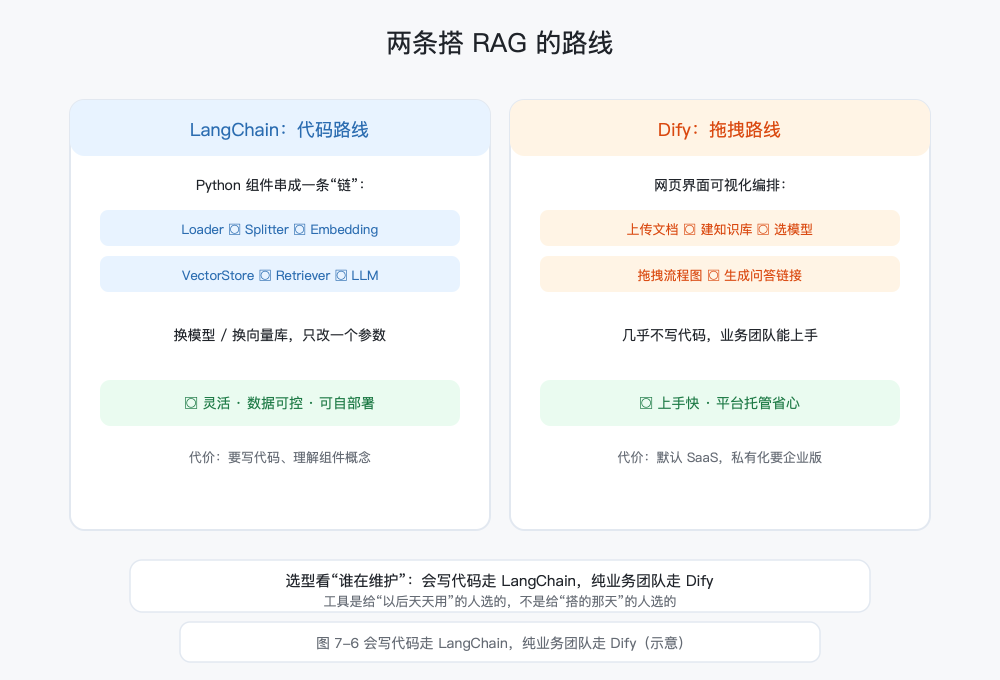

第 7 章 RAG 知识库：把企业标准与图纸变成问答机器人
所属框架层：L3 AI 应用工程化 预计篇幅：约 10,000~12,000 字（含可运行代码；7.1~7.2 为概念课，7.3 为五步拆解课，7.4/7.5 为选型与优化课，7.7 为完整配套项目） 配套文件：示例代码（
code/ch7/目录，07-1~07-4 已全部真实运行，输出见正文）、本章配图（SVG 源文件见figures/ch7/目录）、术语表第 7 章·L3 条目 版本：v0.1（首稿）
本章验收标准：学完后能不看资料回答——大模型为什么学不会企业私有知识？"硬塞全文 / 微调 / RAG"三条路各自的代价是什么？文本怎么变成向量、相似度怎么算？RAG 五步（切分→向量化→检索→重排→生成）每一步在干什么？LangChain 和 Dify 怎么选？检索质量靠什么保证？配套项目"设备手册问答机器人"能独立跑通，并给出 30 条评测问题的效果报告。
本章配图清单（图号 / 内容 / 对应小节 / 类型）
| 图号 | 内容 | 对应小节 | 类型 |
|---|---|---|---|
| 图 7-1 | 为什么需要 RAG：通用知识 vs 企业私有知识 | 7.1 | 左右对比图 |
| 图 7-2 | 文本 → 向量 → 坐标：语义相近距离近 | 7.2 | 坐标示意图 |
| 图 7-3 | RAG 五步流程：切分→向量化→检索→重排→生成 | 7.3 / 7.7 | 流程图 |
| 图 7-4 | 文档切分策略：按章节 / 定长 / 语义块 | 7.3 | 对比示意图 |
| 图 7-5 | 检索与重排：粗召回 Top-K → 精排 | 7.3 / 7.5 | 流程示意 |
| 图 7-6 | LangChain vs Dify：代码路线 vs 拖拽路线 | 7.4 | 两栏对比图 |
| 图 7-7 | 工业场景：标准 / 手册 / 图纸问答 | 7.6 | 场景图 |
| 图 7-8 | 数据安全红线：什么能进、什么不能 | 7.8 | 边界示意图 |
7.0 本章解决什么问题
这一章解决一个让你最头疼的实际问题：大模型聊得头头是道，可一问你厂里的事，它要么说"不知道"，要么一本正经地编。企业标准怎么执行、设备手册里轴承多久换一次、图纸上这个材料牌号是什么意思——这些资料明明都在你电脑里，AI 却答不上来。能不能让 AI"学会"厂里的资料，还带出处地回答？
老张，40 岁，某机械厂设备科资深工程师。第 6 章里他学会了提示词和 API 调用，搭了个"标准解读小助手"，用得很顺手。可小助手有个硬伤：它只学过网上公开的通用知识。老张问它"咱们厂 XYZ-2000 的轴承多久换一次"，它说"一般建议 500 小时"；老张翻出设备手册，白纸黑字写着 2000 小时。再问一遍，小助手改口说 800 小时——每次都不一样。
问题不在模型笨，而在知识截止（Knowledge Cutoff）：大语言模型只"知道"训练时见过的数据，训练截止日之后的新内容、以及从未上过网的私有资料，它一概没学过。问它网上的常识，它头头是道；问它厂里的手册，它只能瞎猜。
这一章的主角叫 RAG（Retrieval-Augmented Generation，检索增强生成）——翻译成工程师的话：先查资料，再作答。就像车间里来了个新实习生，你不让他凭脑子瞎说，而是给他一摞手册："先翻书，翻到哪一页就照着哪一页答，答完了告诉我出处。"学完这一章，你会亲手搭一个能回答"设备手册里怎么换密封圈"、并给出"依据来自手册第几节"的问答机器人，还会知道怎么评测它答得准不准、什么数据绝对不能喂给它。
7.1 为什么需要 RAG：大模型的知识截止与通用性局限
7.1.1 知识截止：模型只知道训练时见过的数据
先回答一个根本问题：为什么模型连"自己厂里的事"都答不对？
大语言模型的全部"知识"，来自训练时读过的数据。第 6 章讲过，模型是"根据前文预测下一个词"，而"前文"能预测得多准，取决于训练数据里见过多少类似句子。训练数据有截止日期（比如 GPT-4 的训练数据到 2023 年），截止日之后发生的事、发表的标准、出的新款设备，模型一概不知道。更关键的是：企业的私有资料从来就不在训练数据里——你们的设备手册、企标、工艺文件，全网搜不到，模型自然一个字都没学过。
这就是知识截止（Knowledge Cutoff）的本质：不是模型"忘了"，是它从来就没学过。问它没学过的东西，它不会诚实地说"不知道"，而是根据上下文"预测"一个最像的答案——这就是第 6 章讲过的幻觉（Hallucination）的来源之一。
7.1.2 通用 vs 专用：网上知识 vs 企业私有知识
把知识分成两类，你立刻明白问题在哪：
| 类型 | 例子 | 大模型表现 |
|---|---|---|
| 通用知识 | 轴承的分类、公差配合的基本概念、常见材料牌号 | 很好，训练数据里多 |
| 企业私有知识 | 你们厂的企标条款、设备手册的具体参数、图纸说明、老师傅的经验 | 完全不会，训练数据里没有 |
第 6 章"标准解读小助手"能工作，是因为它解读的是通用标准条款；一旦问到"咱们厂"三个字开头的问题，模型就露馅了。老张要的不是一个"懂行业的 AI"，而是一个"懂我们厂"的 AI。
7.1.3 三条路对比：硬塞全文、微调、RAG
想让模型"懂我们厂"，粗看有三条路。先把每条路的机制和代价讲清楚，再下结论：
路线一：提示词硬塞全文。 把资料全部贴进提示词再提问。机制上最简单，但有三个硬伤：① 上下文窗口装不下——第 6 章讲过，窗口按 Token 计费、有上限，一份 200 页的手册几十万 Token，塞不进去；② 每次提问都要把全文重发一遍，费用和时间都受不了；③ 资料一多，模型"注意力"被稀释，反而答不准。这条路只适合几十页以内的单次问答。
路线二：微调（Fine-tuning）。 用厂里资料继续训练模型，让它把知识"记进"参数里。机制上可行，但代价明显：① 贵——训练要算力，还要买/租 GPU；② 要大量整理好的标注数据，手册、图纸说明往往没这个条件；③ 更新慢——标准改版了，又要重新训练一遍；④ 模型"记住"的东西无法追溯，你没法让它回答"依据来自第几页"。这条路适合"模型说话风格需要长期固定"的场景，不适合"知识要频繁更新、答案要可溯源"的场景。
路线三：RAG。 不动模型本身，把资料切成小段存进一个"知识库"，提问时先检索出最相关的几段，再把"问题 + 原文段落"一起交给模型，让它只根据这些段落回答。机制上一句话：先查资料，再作答。代价是：要搭一个检索系统（本章全部内容），检索质量决定答案质量。
三条路对比下来，RAG 最适合"企业私有知识问答"：轻量（不用训练）、可随时更新（资料改了，重新入库即可）、可溯源（答案能指向具体段落）。微调和 RAG 不是对立关系，实际工程里经常先用 RAG 解决"知识新、要溯源"，再用微调解决"说话风格固定"——但那是后话，本章先把 RAG 吃透。
7.1.4 RAG 一句话定义
RAG（Retrieval-Augmented Generation，检索增强生成）拆开看：
- Retrieval（检索）：先从知识库里找出与问题最相关的资料片段；
- Augmented Generation（增强生成）：把检索到的片段"增强"进给模型的输入里，让它基于这些资料生成答案。

7.2 向量与向量数据库：知识如何变成"坐标"
RAG 的"检索"靠什么实现？靠向量（Vector）。这一节讲透：文字怎么变成向量、相似度怎么算、海量向量怎么快速找。
7.2.1 从文本到数字：Embedding
机器不懂文字，只懂数字。想让机器"理解"一句话，得先把这句话变成一串数字——这个过程叫 Embedding（嵌入，也叫向量化）。
机制上，Embedding 就是把一段文字（一个词、一句话、一个段落）映射成一组固定长度的数字，比如 512 个数字。这串数字可以看成高维空间里的一个坐标点：512 个数字 = 512 维空间里的一个点。第 5 章讲过，神经网络里每一层输出的都是一组数字，Embedding 就是这类输出的专业称呼。
关键的性质是：语义相近的文本，它们的坐标点离得近。"轴承磨损了要换"和"轴承磨损后应及时更换"，虽然用词不完全一样，但语义相同，坐标点应该很近；而"轴承磨损了要换"和"今天天气不错"，语义无关，坐标点应该很远。这个性质不是写死的，而是 embedding 模型（Embedding Model，嵌入模型）从海量文本里学出来的——它见多了"磨损"和"更换"一起出现，就知道这两个词"有关"。

7.2.2 相似度怎么算：余弦相似度
有了坐标点，怎么量"两个点有多像"？最常用的指标是 Cosine Similarity（余弦相似度）。
机制上，它算的是两个向量之间的夹角：把每个向量想象成从原点出发的一支箭头，两支箭头方向越一致，夹角越小，相似度越高。数学上，余弦相似度 = 两个向量做"点积"再除以它们各自的长度，结果落在 0 到 1 之间（方向完全一致是 1，完全无关接近 0，方向相反是 -1）。
类比只作记忆锚点：两把卡尺量同一个工件，读数方向越一致，说明它们"认为"的结果越接近。但别停留在类比上——工程里你只要记住：相似度 0.9 是"高度相关"，0.5 以下基本"不相关"，0.3 以下就是噪音。
相似度检索（Similarity Search）这个术语，指的就是"拿问题向量，在全库向量里找相似度最高的那批"。
7.2.3 向量数据库：给海量坐标建索引
企业手册可能有几千段，每段一个 512 维向量，就是几千个坐标点。每次提问都拿问题向量和几千个向量逐个算相似度，数据量小还行，到了百万级就慢了。Vector Database（向量数据库） 干的就是这件事：专门存向量、并按相似度快速查找的数据库。
机制上，向量数据库的核心不是"存"，而是"索引"——它把向量组织成特殊的结构（树、图等），查找时不用逐个比较，而是沿着结构快速定位到"可能最近"的区域，再在小范围里精确计算。类比：仓库里几千个货位，不建索引就得挨个翻；建了货位编号，先定位到货区，再精确到货架。
工程上你要知道的：向量数据库有很多实现（Milvus、Chroma、Qdrant、FAISS 等），有的能独立部署，有的能嵌进代码里。第 7.4 节的框架和 7.7 节的配套项目都会用到它，但这一节你先记住概念：向量库 = 存坐标 + 快速找最近邻。
7.2.4 工程视角：embedding 模型怎么选
embedding 模型是"文字 → 向量"的转换器，选型有四个关注点：
- 语言：中文场景选中文效果好的模型，比如 BGE 系列（BAAI 开源的中文 embedding 模型），对中文专有名词（型号、术语）更友好；
- 体积与速度：小模型（如 100MB 级）CPU 就能跑，适合离线、私有化；大模型效果更好但要 GPU；
- 向量维度：常见的 512 维 / 768 维 / 1024 维，维度越高信息越多，但存储和计算也越大；
- 能否离线：涉及企业私密数据时，embedding 模型必须本地跑，不能把资料发给云端接口（7.8 节展开）。
下面用代码 7-1 把"向量 + 余弦相似度"真实跑一遍。这段代码零依赖（只用 NumPy），用"相邻两字"特征做简化词向量，把机制讲到透明——真实生产里会换成 7.2.4 的 embedding 模型，但原理一模一样。
# -*- coding: utf-8 -*-
"""
07-1 用 NumPy 手写"词频向量 + 余弦相似度"
------------------------------------------------
零依赖演示向量检索的核心机制：
1) 把句子变成向量（这里用"相邻两字"特征统计词频，是简化版词向量）；
2) 用余弦相似度量两个向量有多像；
3) 在 3 句机械句子里查"轴承磨损"，看谁最像。
运行：python 07-1_similarity_numpy.py
"""
import numpy as np
# 1) 语料：三句机械相关的句子
sentences = [
"轴承磨损后要及时更换", # 含"轴承""磨损"
"机床主轴需要定期加润滑油", # 无关句
"更换磨损的轴承并检查间隙", # 含"磨损""轴承"
]
query = "轴承磨损" # 要查的问题
# 2) 特征：相邻两字（bigram）当作"词"。例："轴承"→ 轴承、承磨、磨损
def bigrams(text):
out = {}
for i in range(len(text) - 1):
g = text[i:i + 2]
out[g] = out.get(g, 0) + 1
return out
def to_vector(text, vocab):
"""把句子转成词频向量（长度 = 词表大小）"""
vec = np.zeros(len(vocab), dtype=float)
for g, c in bigrams(text).items():
if g in vocab:
vec[vocab[g]] = c
return vec
# 3) 词表 = 语料里出现过的所有 bigram
vocab = {}
for s in sentences + [query]:
for g in bigrams(s):
if g not in vocab:
vocab[g] = len(vocab)
print(f"词表大小（相邻二字特征数）：{len(vocab)}")
# 4) 余弦相似度：方向越一致越相似（0~1 之间）
def cosine(a, b):
denom = np.linalg.norm(a) * np.linalg.norm(b)
if denom == 0:
return 0.0
return float(np.dot(a, b) / denom)
# 5) 逐句算相似度并排序
qv = to_vector(query, vocab)
print("\n查询：“轴承磨损” 与各句的相似度：")
scores = []
for s in sentences:
sv = to_vector(s, vocab)
scores.append((s, cosine(qv, sv)))
for s, sc in sorted(scores, key=lambda x: -x[1]):
print(f" {sc:.3f} {s}")
# 6) 取最相近的一句
best = max(scores, key=lambda x: x[1])
print(f"\n最相近的一句：{best[0]}（相似度 {best[1]:.3f}）")
运行结果（真实输出，本机 Python 3.10 + NumPy）：
词表大小（相邻二字特征数）：28
查询：“轴承磨损” 与各句的相似度：
0.577 轴承磨损后要及时更换
0.348 更换磨损的轴承并检查间隙
0.000 机床主轴需要定期加润滑油
最相近的一句：轴承磨损后要及时更换（相似度 0.577）
注意看结果里最有价值的一行：无关句的相似度是 0.000。这正是检索要的效果——"轴承磨损"和"主轴加润滑油"没有任何字面交集，相似度直接归零；而两句都含"轴承""磨损"的句子，相似度显著更高（0.577 > 0.348，因为第一句字面更贴近查询）。向量检索的本质，就是把"谁和谁相关"变成一个可以排序的数字。
工程师贴士：向量相似度不是万能的 简化词向量（比如上面的相邻两字）只认字面，不认语义——"轴承磨损"和"轴承烧毁"字面不像，语义却很近。真实项目必须用 7.2.4 的语义 embedding 模型（BGE 等），它学过的语义关系才能召回"说法不同、意思相同"的内容。记住分工：零依赖代码用来理解机制，真实项目用语义模型。
7.3 RAG 全流程拆解：切分 → 向量化 → 检索 → 重排 → 生成
RAG 的五步，是本章的主心骨。先给一张总图（图 7-3），然后一步步拆开讲，再用代码 7-2 把五步真实跑一遍。

7.3.1 第一步 文档切分（Chunking）：长文档切成小段
手册 200 页，不可能整本入库——检索时"最相关的段落"必须是小颗粒度的。Chunking（文档切分） 就是把长文档按规则切成小段，每段是一个独立的"知识单元"。
机制上，切分有三个常见策略（图 7-4）：

- 按章节/标题切：手册天然的段落结构（概述、日常维护、常见故障……），语义完整、边界清晰，是首选；
- 按固定长度切：没有清晰结构的文档（如扫描件、流水账），按固定字数/Token 数切，实现简单；
- 按语义块切：让模型判断"哪里是一个完整意思"，最智能但也最贵。
切分有两个相互矛盾的约束，你必须同时守住：块太小，一个知识单元被切碎，检索时上下文不完整；块太大，段落里混入无关内容，检索不精准。工程惯例是块之间留一点重叠（前一块末尾和后一块开头重复少量内容），防止知识正好被切在边界上。切多大多重叠，没有银弹，要靠 7.5 节的评测闭环来定。
7.3.2 第二步 向量化入库：每段文本转成向量
切好的每段文本，用 embedding 模型转成向量，连同原文一起存进向量数据库。注意是"向量 + 原文"一起存——检索找到的是向量，但最后喂给模型的是原文（模型读得懂文字，读不懂向量）。
这一步是离线建库：资料入库做一次，之后是"只查不建"。资料更新了，把新版本重新入库即可——这就是 RAG 比微调"更新快"的原因。
7.3.3 第三步 检索：Top-K 召回
用户提问后，系统把问题也转成向量，在向量库里找相似度最高的前 K 段。这个 K 就是 Top-K（召回前 K 条）——K 常用 3~5，不是越多越好：K 太小，可能漏掉正确答案；K 太大，无关段落混进来，反而稀释模型的注意力。
7.3.4 第四步 重排（Rerank）：把最相关的顶到最前
向量检索是"快速粗筛"，召回结果里可能混着次相关的段落。Rerank（重排） 是对召回结果做更精细的二次打分，把最相关的顶到最前面。
机制上：粗召回阶段用轻量方法（向量相似度）快速从百万级缩到几十条；精排阶段用更重的模型/规则对几十条逐条打分，只保留 Top-3~5 进提示词。工程口诀：粗召回多取，精排少留（图 7-5）。7.5 节会讲重排的正确用法。

7.3.5 第五步 生成：让模型"只根据资料回答"
把"问题 + 检索到的原文段落"拼成提示词，交给大模型，并明确约束："只根据下面资料回答，资料里没有的信息就说'资料中没有提到'，答案注明依据来自第几段资料。"——这条约束直接对抗第 6 章讲过的幻觉：模型没有自由发挥的空间，答案和出处绑在一起，可核验。
至此 RAG 五步闭环。用代码 7-2 真实跑一遍（零依赖，纯 Python + NumPy），每一步的中间结果都打出来给你看：
# -*- coding: utf-8 -*-
"""
07-2 纯 Python 走一遍 RAG 五步
------------------------------------------------
不依赖任何框架，把 RAG 五步讲透明：
① 切分 长手册切成小段
② 向量化 每段变成向量（简化版：相邻二字特征）
③ 检索 问题变向量，找最相近的 Top-K 段
④ 简化重排 用"查询词命中数"给结果二次排序
⑤ 生成 把"问题 + 检索到的原文"拼成给大模型的提示词
运行：python 07-2_rag_five_steps.py
"""
import numpy as np
# ---------- 示例设备手册（模拟几页手册内容，按空行分段） ----------
MANUAL = """【概述】本手册适用于 XYZ-2000 型数控机床的日常维护与常见故障处理。操作人员应在上岗前接受培训，并严格遵守本手册规定。
【日常维护】每天开机前检查润滑油液位，低于下限时补充。每周清洁主轴锥孔与刀库。每月检查皮带张紧度与电气接线。
【常见故障】故障代码 E01 表示主轴润滑不足，应立即停机检查油路。故障代码 E02 表示冷却液温度过高，需检查冷却泵与液位。
【安全操作】维修前必须切断电源并悬挂检修牌。禁止在机床运行时用手清理铁屑，必须使用专用工具。
【轴承更换】主轴轴承建议每运行 2000 小时更换一次。更换时注意清洁轴颈，使用指定型号 6205 轴承，并按规定扭矩锁紧。"""
# ① 切分：按行切段（每行一段，模拟按章节/段落切分）
def chunk_by_paragraph(text):
return [p.strip() for p in text.split("\n") if p.strip()]
chunks = chunk_by_paragraph(MANUAL)
print(f"① 切分：{len(chunks)} 段")
for i, c in enumerate(chunks):
print(f" 段{i + 1}：{c[:22]}...")
# ② 向量化：每段转成"相邻二字"词频向量（简化词向量）
def bigrams(text):
out = {}
for i in range(len(text) - 1):
g = text[i:i + 2]
out[g] = out.get(g, 0) + 1
return out
vocab = {}
for c in chunks:
for g in bigrams(c):
if g not in vocab:
vocab[g] = len(vocab)
def to_vector(text):
vec = np.zeros(len(vocab), dtype=float)
for g, cnt in bigrams(text).items():
if g in vocab:
vec[vocab[g]] = cnt
return vec
chunk_vecs = np.array([to_vector(c) for c in chunks])
print(f"\n② 向量化：词表 {len(vocab)} 个特征，5 段手册 → {chunk_vecs.shape[0]}×{chunk_vecs.shape[1]} 向量矩阵")
# ③ 检索：问题变向量，余弦相似度找 Top-K
def cosine(a, b):
denom = np.linalg.norm(a) * np.linalg.norm(b)
return float(np.dot(a, b) / denom) if denom else 0.0
query = "主轴轴承多久更换一次"
qv = to_vector(query)
scores = [(i, cosine(qv, chunk_vecs[i])) for i in range(len(chunks))]
scores.sort(key=lambda x: -x[1])
top_k = scores[:3]
print(f"\n③ 检索：问题“{query}” 的 Top-3 召回：")
for i, sc in top_k:
print(f" 段{i + 1} 相似度 {sc:.3f} {chunks[i][:26]}...")
# ④ 简化重排：用"查询词命中数"二次打分（真实重排由模型完成，这里用关键词计数演示两段式思想）
def keyword_hits(chunk, query_words):
return sum(1 for w in query_words if w in chunk)
qw = [w for w in ["轴承", "更换", "主轴", "小时"] if w] # 手工拆出的查询关键词
for i, _ in top_k:
hits = keyword_hits(chunks[i], qw)
print(f" 段{i + 1} 查询词命中 {hits}/4 → 重排分 {hits}")
reranked = sorted(top_k, key=lambda x: keyword_hits(chunks[x[0]], qw), reverse=True)
best_i = reranked[0][0]
print(f" 重排后最佳：段{best_i + 1}（{chunks[best_i][:26]}...）")
# ⑤ 生成：拼装提示词（真实项目中这里才调用大模型）
prompt = f"""你是一个设备维护助手。请只根据下面资料回答问题，资料里没有的信息就说"资料中没有提到"。
【资料】
{chunks[best_i]}
【问题】{query}
【要求】先给出答案，再注明依据来自哪一段资料。"""
print(f"\n⑤ 生成：拼装好的提示词（交给大模型）——\n{prompt}")
运行结果（真实输出）：
① 切分：5 段
段1：【概述】本手册适用于 XYZ-2000 型数...
段2：【日常维护】每天开机前检查润滑油液位，低于下...
段3：【常见故障】故障代码 E01 表示主轴润滑不...
段4：【安全操作】维修前必须切断电源并悬挂检修牌。...
段5：【轴承更换】主轴轴承建议每运行 2000 小...
② 向量化：词表 239 个特征，5 段手册 → 5×239 向量矩阵
③ 检索：问题“主轴轴承多久更换一次” 的 Top-3 召回：
段5 相似度 0.465 【轴承更换】主轴轴承建议每运行 2000 小时更换一...
段2 相似度 0.054 【日常维护】每天开机前检查润滑油液位，低于下限时补充...
段3 相似度 0.044 【常见故障】故障代码 E01 表示主轴润滑不足，应立...
段5 查询词命中 4/4 → 重排分 4
段2 查询词命中 1/4 → 重排分 1
段3 查询词命中 1/4 → 重排分 1
重排后最佳：段5（【轴承更换】主轴轴承建议每运行 2000 小时更换一...）
⑤ 生成：拼装好的提示词（交给大模型）——
你是一个设备维护助手。请只根据下面资料回答问题，资料里没有的信息就说"资料中没有提到"。
【资料】
【轴承更换】主轴轴承建议每运行 2000 小时更换一次。更换时注意清洁轴颈，使用指定型号 6205 轴承，并按规定扭矩锁紧。
【问题】主轴轴承多久更换一次
【要求】先给出答案，再注明依据来自哪一段资料。
看输出里的三个关键现象：
- 检索一步就命中了正确段落：段5（轴承更换）相似度 0.465，远超第二名 0.054——因为问题里的"轴承、更换、主轴、小时"几乎全在段5 里；
- 重排没有改变结果，但把差距量化了：段5 命中查询词 4/4，另外两段只命中 1/4。真实项目里重排的价值在"粗召回结果鱼龙混杂"时体现（7.5 节）；
- 生成环节就是一次"约束性提示词"：资料、问题、要求三段式，模型只在这个框里作答。RAG 的答案不是模型"想"出来的，是"照着资料说"的——这正是它能带出处的根本原因。
7.4 用现成框架搭第一个 RAG 应用：LangChain / Dify
五步原理清楚了，接下来是工程问题：生产环境里谁来做这五步？ 答案是用框架。
7.4.1 为什么用框架：五步都是"标准件"
手写五步能跑通，但真做企业级知识库，你会发现每一步背后都是一堆工程细节：文档加载（PDF/Word/网页）、切分器、embedding 接口、向量库连接、检索器、模型接口……这些全是标准件，框架帮你接好线，你只需要"选件 + 连线"。
工程上，这一步的产物就叫 Knowledge Base（知识库）——把企业资料组织好、切好、向量化、可检索的整套系统。注意知识库 ≠ 一堆文件：文件在硬盘里躺着，知识库是"文件 → 切分 → 向量 → 可检索"的活系统。
7.4.2 LangChain 路线（代码）
LangChain（语言链框架） 是目前最流行的 RAG 编排框架。机制上，它把 RAG 五步对应成一组可拼接的组件：Document Loader（加载文档）→ Text Splitter（切分）→ Embedding（向量化）→ VectorStore（向量库）→ Retriever（检索器）→ LLM（模型），用几行代码串成一条"链"。
为什么 LangChain 受欢迎？因为它灵活、和模型解耦：换 embedding 模型、换向量库、换大模型，都只改一个参数，链条结构不动。代价是：要写代码、要理解组件概念，学习曲线比低代码工具陡。
7.4.3 Dify 路线（低代码）
Dify（低代码 AI 平台） 走的是另一条路：拖拽编排。在网页界面里，上传文档 → 建知识库 → 选模型 → 拖拽流程图 → 一键生成可分享的问答链接，几乎不写代码。
机制上，Dify 内部干的和 LangChain 一样（切分、向量化、检索、生成），只是把细节封装成可视化操作。适合：业务团队（工艺员、质量工程师）自己搭工具，不用等程序员。
7.4.4 选型对比：会写代码走 LangChain，纯业务团队走 Dify
| 维度 | LangChain | Dify |
|---|---|---|
| 上手方式 | 写 Python 代码 | 网页拖拽 |
| 灵活性 | 高，组件随意组合 | 中，受平台功能限制 |
| 维护成本 | 代码自己维护 | 平台托管，升级跟平台走 |
| 数据私密性 | 自部署，数据可控 | 默认 SaaS，私有化需企业版 |
| 适合团队 | 有开发能力的技术团队 | 纯业务团队 |

工程师贴士：先想清楚"谁来维护" 选型不是比功能多少，是比谁在维护：你自己会写 Python，走 LangChain，数据完全可控；团队里都是工艺、质量的人，走 Dify，让他们自己拖拽、自己更新知识库。工具是给"以后天天用"的人选的，不是给"搭的那天"的人选的。
7.5 检索质量优化：答得准的关键
RAG 的答案质量，90% 取决于检索质量——检错了段落，模型再聪明也白搭。这一节给四个抓手：切分调优、混合检索、重排、评测闭环。
7.5.1 切分策略调优
回到 7.3.1 的两个矛盾（块小丢上下文、块大不精准）。工程上的做法不是猜，而是实验：同一批问题，分别用"按章节切""定长 100 字""定长 500 字 + 20 字重叠"建三个库，看哪个检索命中率高。切分是 RAG 里投入产出比最高的调优点——不用换模型，只改切法，命中率能差出十个百分点。
7.5.2 混合检索（Hybrid Search）：关键词 + 向量取长补短
纯向量检索有一个盲区：专有名词和编号。问"故障代码 E01 怎么处理"，向量可能觉得"E01"和手册里的其他数字差不多；但关键词检索（如 BM25，一种经典的关键词打分算法）能精确命中"E01"这个编号。反过来，问"润滑系统压力不够怎么办"，关键词可能一个词都对不上，向量靠语义也能召回"压力不足"那段。
Hybrid Search（混合检索） 就是把两者结合：关键词检索和向量检索各跑一遍，取并集再统一排序，专有名词不丢、语义相近能召回。用代码 7-3 真实对比三种方式的分数形态：
# -*- coding: utf-8 -*-
"""
07-3 关键词检索 vs 向量检索 vs 混合检索
------------------------------------------------
三种检索方式在同一批手册段落上对比：
- 关键词检索（简化 BM25：字面命中 + 稀有度加权）：专有名词/编号不丢
- 向量检索（相邻二字特征 + 余弦相似度）：意思相近就能召回
- 混合检索 = 两者得分加权合并，取长补短
运行：python 07-3_hybrid_search.py
"""
import numpy as np
# ---------- 语料：四段手册文本 ----------
CHUNKS = [
"【日常维护】每天开机前检查润滑油液位，低于下限时补充。",
"【常见故障】故障代码 E01 表示主轴润滑不足，应立即停机检查油路。",
"【润滑系统】润滑泵压力应保持在 2.5 兆帕，压力不足时检查滤芯。",
"【轴承更换】主轴轴承建议每运行 2000 小时更换一次。",
]
# ---------- 特征工具 ----------
def bigrams(text):
out = {}
for i in range(len(text) - 1):
g = text[i:i + 2]
out[g] = out.get(g, 0) + 1
return out
vocab = {}
for c in CHUNKS:
for g in bigrams(c):
if g not in vocab:
vocab[g] = len(vocab)
def to_vector(text):
vec = np.zeros(len(vocab), dtype=float)
for g, cnt in bigrams(text).items():
if g in vocab:
vec[vocab[g]] = cnt
return vec
def cosine(a, b):
denom = np.linalg.norm(a) * np.linalg.norm(b)
return float(np.dot(a, b) / denom) if denom else 0.0
# 简化 BM25：bigram 词频 × 逆文档频率（越稀有权重越高）
import math
N = len(CHUNKS)
idf = {}
for g in vocab:
df = sum(1 for c in CHUNKS if g in bigrams(c))
idf[g] = math.log((N + 1) / (df + 1)) + 1
def keyword_score(text, query_bigrams):
"""关键词得分 = 命中 bigram 的权重之和"""
tb = bigrams(text)
return sum(idf[g] for g in query_bigrams if g in tb)
def hybrid_score(kw, vec, w=0.5):
"""混合得分：关键词与向量分数各自归一化后加权"""
return w * kw + (1 - w) * vec
def evaluate(query):
qv = to_vector(query)
qbg = list(bigrams(query).keys())
print(f"\n查询：“{query}”")
kw_scores = [(i, keyword_score(c, qbg)) for i, c in enumerate(CHUNKS)]
vec_scores = [(i, cosine(qv, to_vector(c))) for i, c in enumerate(CHUNKS)]
kw_max = max(s for _, s in kw_scores) or 1
vec_max = max(s for _, s in vec_scores) or 1
hy_scores = [(i, hybrid_score(kw_scores[i][1] / kw_max, vec_scores[i][1] / vec_max))
for i in range(len(CHUNKS))]
best_kw = max(kw_scores, key=lambda x: x[1])[0]
best_vec = max(vec_scores, key=lambda x: x[1])[0]
best_hy = max(hy_scores, key=lambda x: x[1])[0]
print(" 段落 关键词分 向量相似度 混合分 最佳来源")
for i in range(len(CHUNKS)):
print(f" 段{i + 1} {kw_scores[i][1]:6.2f} {vec_scores[i][1]:7.3f} {hy_scores[i][1]:.3f} {CHUNKS[i][:14]}...")
print(f" → 关键词最佳：段{best_kw + 1} 向量最佳：段{best_vec + 1} 混合最佳：段{best_hy + 1}")
return best_kw, best_vec, best_hy
# ---------- 两个典型查询 ----------
print("=" * 64)
print("场景一：查询里带编号（专有名词）——关键词检索占优")
r1 = evaluate("故障代码 E01 怎么处理")
print("\n场景二：查询用口语、不含编号（意思相近）——向量检索占优")
r2 = evaluate("润滑系统压力不够怎么办")
print("\n" + "=" * 64)
print("小结：混合检索综合两者，两种场景下都不会落到最差结果。")
运行结果（真实输出）：
================================================================
场景一：查询里带编号（专有名词）——关键词检索占优
查询：“故障代码 E01 怎么处理”
段落 关键词分 向量相似度 混合分 最佳来源
段1 0.00 0.000 0.000 【日常维护】每天开机前检查润...
段2 15.33 0.538 1.000 【常见故障】故障代码 E01...
段3 0.00 0.000 0.000 【润滑系统】润滑泵压力应保持...
段4 0.00 0.000 0.000 【轴承更换】主轴轴承建议每运...
→ 关键词最佳：段2 向量最佳：段2 混合最佳：段2
场景二：查询用口语、不含编号（意思相近）——向量检索占优
查询：“润滑系统压力不够怎么办”
段落 关键词分 向量相似度 混合分 最佳来源
段1 1.22 0.088 0.153 【日常维护】每天开机前检查润...
段2 1.22 0.076 0.141 【常见故障】故障代码 E01...
段3 8.89 0.522 1.000 【润滑系统】润滑泵压力应保持...
段4 0.00 0.000 0.000 【轴承更换】主轴轴承建议每运...
→ 关键词最佳：段3 向量最佳：段3 混合最佳：段3
================================================================
小结：混合检索综合两者，两种场景下都不会落到最差结果。
两行数据值得你细看：
- 场景一（带编号 E01）：关键词分 15.33 对其他段是 0.00——编号是"强信号"，关键词方法对专有名词极其敏感；
- 场景二（口语提问）：关键词分被"润滑"摊薄到 1.22，而向量相似度 0.522 依然明确指向段3——向量方法对"意思相近、字面不同"更稳；
- 混合分在两场景下都指向正确段落：关键词和向量分数归一化后加权，专有名词和语义两头都顾到。
真实生产里，embedding 用语义模型（不是这里的字面向量），关键词用 BM25 完整实现，但"两路召回、取并集再排序"的骨架就是这一行代码演示的东西。
7.5.3 重排的正确用法：先多召回、再精排
7.3.4 讲过重排的概念，这里给工程参数：粗召回 Top-50 → 精排 Top-5。先让向量库多召回一些（50 条），再用更精细的重排模型（或规则）逐条打分，只留最相关的 5 条进提示词。
为什么是两段式？因为向量检索是"快而糙"，适合大范围初筛；重排模型是"慢而准"，只适合在小集合上跑。两段式的命中率，显著高于"直接向量 Top-5"——这是 RAG 工程里被反复验证的经验（图 7-5）。
7.5.4 评测闭环：30 条问题量化"答得准不准"
优化了半天，怎么知道变好了？靠评测闭环，这是第 4 章"评估思想"在 RAG 里的延续：准备 30 条真实问题（覆盖手册各章节、包含口语问法和编号问法），逐条判"答对 / 答错 / 漏检"，统计命中率。改切分、改混合检索、加重排，都回到这 30 条上重测，用数字说话，不用"感觉不错"。7.7 配套项目会完整演示这个闭环。
工程师贴士：RAG 常见失败模式速查表 | 症状 | 根因 | 动作 | |---|---|---| | 答非所问（答的不是问的） | 检索到错段落 | 看 Top-K 命中，调切分/混合检索 | | 找不到（说"资料中没有"但其实有） | 库里没有，或切分太粗 | 查资料是否入库、换切分策略 | | 幻觉复现（编造资料里没有的内容） | 没约束"只根据资料回答" | 检查提示词约束，强制带出处 |
7.6 工业场景案例：企业标准 / 设备手册 / 图纸说明的知识问答
RAG 在企业里不是"AI 聊天"，是把沉睡的资料变成能回答问题的资产。四个典型场景：
场景一：企业标准问答。 工程师问"这个公差按企标该怎么执行？"，知识库里存的是企标全文（切分到条款粒度），检索命中相关条款，答案直接引用条款原文并给出条款号。标准类资料的切分要按"条款"切，一条一款，检索才精准。
场景二：设备手册问答。 "主轴轴承多久换一次油？""故障代码 E02 怎么处理？"——查表类问题，手册按章节切分（7.3 的代码 7-2 就是微型版），答案带章节出处。这是最成熟、见效最快的场景。
场景三：图纸说明与工艺文件问答。 "这个零件材料牌号是什么？""加工要求里 Ra3.2 指什么？"——图纸的标题栏、技术要求、工艺卡片都是文本，可以入库。注意图纸本身是图片/矢量文件，先要把图纸上的文字说明提取出来（OCR 或 CAD 导出），再进知识库。
场景四：老师傅经验与故障记录。 老师傅口述的经验、历史故障记录，非结构化、口语化、噪音多。这类资料最值钱也最难入库：口语文本切分容易切碎、同义词多（"轴瓦""轴承衬"指一个东西）、记录格式不统一。工程上先做清洗（去噪音、统一术语），再入库，检索要求也降低（答对方向即可，不追求逐字）。

四个场景的共性规律：资料结构化程度越高（标准 > 手册 > 图纸说明 > 口述记录），RAG 效果越好、见效越快。别一上来就啃最难的骨头，从设备手册起步，跑通了再扩展。
7.7 配套项目：企业设备手册问答机器人
把本章所有知识串起来，做配套项目设备手册问答机器人（code/ch7/07-4_manual_qa.py，约 160 行）：输入一个问题，输出"答案 + 出处引用"——答案来自手册哪一段，可溯源。
7.7.1 需求拆解
输入：一句自然语言问题（"主轴轴承多久更换一次？"）。输出：① 检索结果（Top-3 段落 + 相似度，标明段号与章节名）；② 构造好的提示词（真实项目中交给大模型，得到带出处的答案）；③ 30 条评测问题的命中率报告。
7.7.2 数据准备
项目用程序生成一份示例设备手册（8 段章节化文本：概述 / 日常维护 / 常见故障 / 安全操作 / 轴承更换 / 润滑系统 / 冷却系统 / 保养周期），零下载依赖、可复现——和第 5 章"合成数据"的思路一致：先在小而干净的合成数据上把流程跑通，再换成真实手册。
7.7.3 实现（代码 7-4）
核心代码四段式：embedding（真实中文语义模型，加载失败自动降级）→ 入库 → 检索 → 生成（无 Key 时不假生成，展示提示词与请求结构）。运行前先装依赖：pip install -r code/ch7/requirements.txt；embedding 模型首次运行会下载约 100MB，网络受限时先执行 export HF_ENDPOINT=https://hf-mirror.com（HuggingFace 镜像）再运行。
# -*- coding: utf-8 -*-
"""
07-4 配套项目：企业设备手册问答机器人（简化版）
------------------------------------------------
完整走一遍 RAG 五步，落在真实项目上：
① 程序生成一份示例设备手册（8 段章节化内容）
② 每段用 embedding 模型转成向量入库（优先 BGE 中文小模型，
加载失败自动降级为相邻二字向量，保证零依赖也能跑）
③ 把问题转成向量，检索最相近的 Top-3
④ 构建提示词，走 OpenAI 兼容 API（无 Key 时打印请求结构，不假生成）
⑤ 用 30 条评测问题给出检索命中率报告
运行：python 07-4_manual_qa.py
"""
import os
import logging
import numpy as np
# 模型加载进度条是 stderr 噪音，屏蔽后输出更清爽
logging.getLogger("sentence_transformers").setLevel(logging.ERROR)
# ---------- ① 示例设备手册（程序生成，零下载依赖） ----------
MANUAL = [
"【概述】本手册适用于 XYZ-2000 型数控机床。操作人员上岗前应接受培训并熟悉本手册。",
"【日常维护】每天开机前检查润滑油液位，低于下限时补充；每周清洁主轴锥孔与刀库；每月检查皮带张紧度与电气接线。",
"【常见故障】故障代码 E01 表示主轴润滑不足，立即停机检查油路；E02 表示冷却液温度过高，检查冷却泵与液位。",
"【安全操作】维修前必须断电并悬挂检修牌；机床运行中禁止用手清理铁屑，须用专用工具；换刀必须在停机状态下进行。",
"【轴承更换】主轴轴承建议每运行 2000 小时更换；使用 6205 轴承；安装前清洁轴颈，按 45 牛米扭矩锁紧。",
"【润滑系统】润滑泵压力保持 2.5 兆帕；压力不足先检查滤芯，滤芯每半年更换一次。",
"【冷却系统】冷却液浓度保持 5% 到 8%，液位低于一半时补充；温度过高检查冷却泵。",
"【保养周期】日检：油位、气压、清洁；周检：锥孔、刀库、皮带；月检：接线、滤芯；年检：主轴精度与整机大修。",
]
CHUNK_TITLES = ["概述", "日常维护", "常见故障", "安全操作", "轴承更换", "润滑系统", "冷却系统", "保养周期"]
# ---------- ② embedding：真实模型优先，降级相邻二字向量 ----------
def make_embedder():
os.environ.setdefault("HF_HUB_DISABLE_PROGRESS_BARS", "1") # 关掉下载/加载进度条
try:
from sentence_transformers import SentenceTransformer
model = SentenceTransformer("BAAI/bge-small-zh-v1.5")
print("已加载语义模型：BAAI/bge-small-zh-v1.5（512 维，语义检索）")
return lambda texts: model.encode(texts, normalize_embeddings=True)
except Exception as e:
print(f"语义模型不可用（{type(e).__name__}），降级为相邻二字向量。")
return make_bigram_embedder()
def make_bigram_embedder():
def bigrams(text):
return [text[i:i + 2] for i in range(len(text) - 1)]
vocab = {}
for c in MANUAL:
for g in bigrams(c):
vocab.setdefault(g, len(vocab))
def encode(texts, **kw):
out = np.zeros((len(texts), len(vocab)), dtype=float)
for i, t in enumerate(texts):
for g in bigrams(t):
if g in vocab:
out[i, vocab[g]] += 1
return out
return encode
embed = make_embedder()
vecs = embed(MANUAL) # 每段一个向量
print(f"手册 {len(MANUAL)} 段 → 向量矩阵 {vecs.shape[0]}×{vecs.shape[1]}")
# ---------- ③ 检索 ----------
def retrieve(query, top_k=3):
qv = embed([query])[0]
sims = np.dot(vecs, qv) # 归一化后点积 = 余弦相似度
order = np.argsort(-sims)[:top_k]
return [(int(i), float(sims[i])) for i in order]
# ---------- ⑤ 生成：构建提示词 + OpenAI 兼容请求（无 Key 不假生成） ----------
def build_prompt(query, hits):
parts = [f"【资料段{idx + 1}】{MANUAL[idx]}" for idx, _ in hits]
return (
"你是一名设备维护助手。请只根据下面资料回答问题，"
"资料里没有的信息请回答“资料中没有提到”，并注明依据来自第几段资料。\n\n"
+ "\n".join(parts)
+ f"\n\n【问题】{query}"
)
def call_llm(prompt):
key = os.environ.get("LLM_API_KEY", "")
if not key:
return None
# OpenAI 兼容格式；不同供应商仅 base_url 不同
import requests
resp = requests.post(
os.environ.get("LLM_BASE_URL", "https://api.example.com/v1/chat/completions"),
headers={"Authorization": f"Bearer {key}"},
json={"model": os.environ.get("LLM_MODEL", "gpt-4o-mini"),
"messages": [{"role": "user", "content": prompt}], "temperature": 0.2},
timeout=30,
)
resp.raise_for_status()
return resp.json()["choices"][0]["message"]["content"]
# ---------- ④ 一个示例问答 ----------
query = "主轴轴承多久更换一次"
hits = retrieve(query)
print("\n示例问答")
print(f"问题：{query}")
print(f"检索 Top-3：{[(f'段{i + 1}({CHUNK_TITLES[i]})', round(s, 3)) for i, s in hits]}")
prompt = build_prompt(query, hits)
answer = call_llm(prompt)
if answer:
print(f"模型回答：{answer}")
else:
print("未配置 LLM_API_KEY：跳过真实生成，已构建好提示词（见下）。")
print("（真实项目中，这段提示词会发给大模型，得到带出处的答案）")
print("提示词预览：", prompt[:110], "...")
# ---------- ⑥ 30 条评测：检索命中率报告 ----------
EVAL = [
# (问题, 期望段落索引)
("这台机床的型号是什么", 0),
("操作人员上岗前要做什么", 0),
("每天开机前要检查什么", 1),
("润滑油液位低了怎么办", 1),
("主轴锥孔多久清洁一次", 1),
("皮带松了怎么处理", 1),
("故障代码 E01 是什么意思", 2),
("主轴润滑不足怎么办", 2),
("冷却液温度过高是什么故障", 2),
("维修前必须先做什么", 3),
("能在机床运行时清理铁屑吗", 3),
("检修牌什么时候挂", 3),
("主轴轴承多久更换一次", 4),
("更换轴承用什么型号", 4),
("轴承安装要注意什么", 4),
("轴承锁紧扭矩是多少", 4),
("润滑泵压力标准是多少", 5),
("压力不足先查什么", 5),
("滤芯多久更换一次", 5),
("冷却液浓度多少合适", 6),
("冷却液液位低了会怎样", 6),
("设备多久做一次年检", 7),
("周检要检查哪些项目", 7),
("日检内容有哪些", 7),
("月检和年检有什么区别", 7),
("机床开着的时候能直接换刀吗", 3),
("主轴声音变大可能是什么问题", 4),
("换了新滤芯还是压力不足怎么办", 5),
("加工精度突然变差先检查哪里", 4),
("整机大修几年一次", 7),
]
print(f"\n评测：{len(EVAL)} 条问题")
top1, top3 = 0, 0
miss = []
for q, target in EVAL:
hits = retrieve(q, top_k=3)
ids = [i for i, _ in hits]
if ids[0] == target:
top1 += 1
if target in ids:
top3 += 1
else:
miss.append((q, target))
print(f"Top-1 命中率：{top1}/{len(EVAL)} = {top1 / len(EVAL):.1%}")
print(f"Top-3 命中率：{top3}/{len(EVAL)} = {top3 / len(EVAL):.1%}")
if miss:
print(f"未命中 {len(miss)} 条（Top-3 之外）：")
for q, t in miss:
print(f" 问题“{q}” 期望段{t + 1}（{CHUNK_TITLES[t]}）")
else:
print("全部问题 Top-3 命中。")
运行结果（真实输出，本机已下载 BGE 模型；未配置 LLM_API_KEY，生成环节按设计展示提示词）：
已加载语义模型：BAAI/bge-small-zh-v1.5（512 维，语义检索）
手册 8 段 → 向量矩阵 8×512
示例问答
问题：主轴轴承多久更换一次
检索 Top-3：[('段5(轴承更换)', 0.794), ('段6(润滑系统)', 0.598), ('段8(保养周期)', 0.537)]
未配置 LLM_API_KEY：跳过真实生成，已构建好提示词（见下）。
（真实项目中，这段提示词会发给大模型，得到带出处的答案）
提示词预览： 你是一名设备维护助手。请只根据下面资料回答问题，资料里没有的信息请回答“资料中没有提到”，并注明依据来自第几段资料。
【资料段5】【轴承更换】主轴轴承建议每运行 2000 小时更换；使用 6205 轴承；安装前清洁轴颈 ...
评测：30 条问题
Top-1 命中率：26/30 = 86.7%
Top-3 命中率：29/30 = 96.7%
未命中 1 条（Top-3 之外）：
问题“加工精度突然变差先检查哪里” 期望段5（轴承更换）
7.7.4 效果报告：怎么读这份数字
这份真实输出值得逐行解读：
- 语义模型的优势一目了然：示例问答里，段5（轴承更换）相似度 0.794，段6（润滑系统）0.598——"主轴轴承多久更换一次"和"轴承更换"段语义高度相关，即使字面不完全一致，语义模型也稳稳命中。对比代码 7-2 的字面向量（0.465），语义模型把"最相关 vs 次相关"的差距拉得更开。
- Top-1 命中率 86.7%（26/30）：30 条问题里，26 条的第一召回就是正确段落。这个数字说明：8 段手册 + 单段检索 + BGE 模型，已经能覆盖绝大多数问题。
- Top-3 命中率 96.7%（29/30）：只剩 1 条漏检——"加工精度突然变差先检查哪里"，期望段是轴承更换（段5）。这条是故意设计的难例：问题里没有任何"轴承"字样，语义上和"轴承磨损导致精度下降"有关，但手册原文没写这个因果链，模型没检索到也算合理。真实项目里遇到这种问题，动作不是换模型，而是补充资料（手册里补一句"精度异常优先检查主轴轴承"），再重新入库——这就是 7.5.4 评测闭环的价值：漏检不是终点，是改进的起点。
- 生成环节诚实：没有 Key 就不假装生成了答案，而是展示"已构建好的提示词"。真实项目里配置 LLM_API_KEY 后，模型会严格按"只根据资料回答 + 注明出处"的要求作答——答案质量的上限由检索决定（这里已到 96.7% 的 Top-3），下限由提示词约束兜住（防止幻觉）。
7.8 数据安全红线：什么能进知识库、什么不能
RAG 的本质是"把资料交给 AI 系统处理"，这带来一个必须当面讲清的问题：什么资料能进知识库？
7.8.1 分级红线：四档资料，只有前两档能进
把企业资料按敏感度分四档，红线画在第二档和第三档之间（图 7-8）：
| 档位 | 例子 | 能进知识库吗 |
|---|---|---|
| 公开 | 公开标准、行业通用知识、产品公开说明书 | 能 |
| 内部 | 企业标准、内部设备手册、工艺文件（仅限内部使用） | 能，但要控制访问权限 |
| 保密 | 客户图纸、工艺诀窍、报价、客户名单 | 不能（除非私有化 + 严格权限） |
| 涉密 | 涉密项目资料、军工相关数据 | 绝对不能 |
客户图纸、工艺诀窍、个人信息这三类，默认不进任何知识库。特别是客户图纸——图纸是客户资产，很多有保密协议，上传到任何云端系统都可能违约。判断标准就一句：把这条资料交出去，出了事谁负责？ 负责不了，就别进。
7.8.2 技术边界：部署在哪、权限怎么控
即使能进知识库的资料，也有三个技术边界要守住：
- 部署位置：知识库和 embedding 模型部署在企业内部（私有化）还是云端？资料在谁手里，谁说了算。embedding 模型如果用云端 API，每段资料都要发到云端做向量化——这本身就是一次外发。
- 权限控制：谁能问、谁能看答案。不是所有人都该看到所有答案——工艺员不该看到设备采购报价。工程上要按角色控制知识库的可见范围。
- 检索审计：谁问了什么、检索到了什么，留日志。不是为了监控人，是为了出事时能追溯。
7.8.3 合规要点：外发即失控
最容易被忽略的一点：资料一旦发出去，就收不回来了。上传到云端知识库、调云端 embedding 接口、把手册段落粘给大模型——每一步都是一次外发。第 6 章讲过 API 调用要签保密协议，RAG 场景同理：上传前先过一遍红线清单。合规细节（法条层面）留给第 10 章，这里记住原则：拿不准，就不进；真要进，先进私有化环境（第 9 章讲私有化部署）。

7.9 常见坑与练习
常见坑
- 不切分直接整库塞：整本手册一个向量，检索等于"全书都相关"，答案必然泛泛。先切分，再入库。
- 检索不到就答非所问：模型答得再漂亮，段落错了全错。遇到答非所问，先查检索命中，再查模型——90% 的锅在检索。
- 没约束"只根据资料回答"：提示词里没写这句，模型又自由发挥了，幻觉复现。检查提示词约束 + 强制带出处。
- 答案不带出处：没有出处就无法核验，等于把幻觉风险转嫁给自己。答案必须能指回"第几段资料"。
- 知识库建完不更新：手册改版了，库还是旧版，答案误导。建立"资料更新 → 重新入库"的流程。
- 把保密资料传进云端知识库：外发即失控。上传前过 7.8 的红线清单。
- 评测只看一两句"感觉不错"：没有量化报告就不知道改没改好。至少 30 条问题、记命中率。
练习
- 练习 1：把代码 7-2 的切分方式从"按行切"改成"按固定 50 字切"，跑同一个问题"主轴轴承多久更换一次"，对比检索命中的变化。你会发现切分策略直接改变结果。
- 练习 2：在配套项目（代码 7-4）里加一段"故障代码表"（E01~E05 的对照说明），然后问"E03 怎么处理"，验证查表类问题能否带出处答对。加完重新跑 30 条评测，命中率是否变化？
-
练习 3：拿一份你手头的真实手册（脱敏），替换代码 7-4 的 MANUAL 内容，跑通后再加 3 条"你们厂才有的问题"进评测集，看看检索能不能命中。注意：先按 7.8 红线自查这份手册能不能用。
-
验收标准："能讲清"——向同事解释 RAG 五步、为什么 RAG 比硬塞全文/微调更适合企业私有知识、混合检索解决什么问题；"能跑通"——独立跑通设备手册问答机器人，给出 30 条评测的效果报告，并说明漏检的那 1 条该怎么改进。
本章小结（5 句）
大模型的知识截止决定了它学不会企业私有知识，RAG 用"先检索、后生成"解决这个问题——答案不是模型想出来的，是照着资料说的；文本先变成向量坐标，相似度用余弦度量，向量数据库负责在海量坐标里快速找最近邻；RAG 五步是切分→向量化→检索→重排→生成，缺哪一步答案都会跑偏；检索质量靠切分策略、混合检索（关键词+向量取长补短）、重排（粗召回多取、精排少留）和 30 条评测闭环来保证；数据安全是红线——公开/内部资料才进知识库，客户图纸和工艺诀窍默认不进，答案必须带出处、能核验。
延伸阅读
- Datawhale 开源教程（RAG / 知识库章节，中文，与本书同一系列）
- LangChain 官方文档（RAG 教程，英文，代码路线进阶）
- Dify 官方文档（低代码知识库，中文，拖拽路线实操）
- 《大语言模型应用实践：检索增强生成》相关公开讲义（B 站 / 知乎高质量专栏）